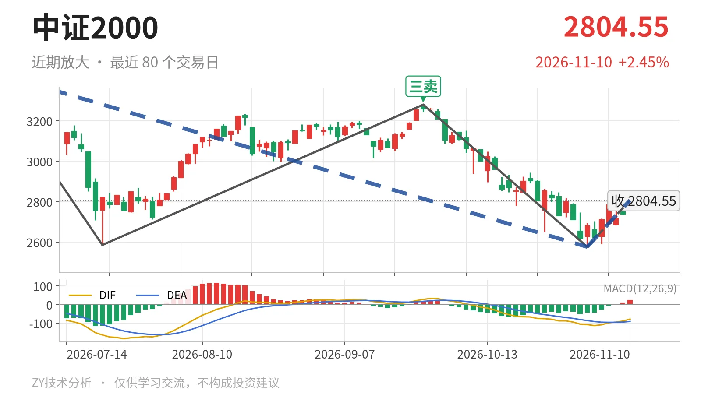

中证2000｜反抽至2807点附近，仍被3280三卖压制

最近日线中枢 3381.36—3593.19点，收盘位于中枢之下
一句话：下跌段未结束，反弹受制3280三卖，力度不足
🧭 走势结构：5月14日以来下跌段未被逆转
当前仍处于5月14日至11月2日的日线下跌线段之后的反抽阶段。该线段从3768.08点跌至2576.02点，跌幅约31.6%，内含5笔，至今没有出现反向日线线段。更大级别看，5月14日至11月2日的下跌走势也没有结束。11月2日至11月10日的上涨只是单笔，高点2806.86点，还构不成日线线段。因此，当前上行只能先当下跌段里的反弹，而非趋势反转。

📐 中枢与位置：跌破最近笔中枢，中枢上移被打断
最新收盘2804.55点位于1月26日至3月23日日线笔中枢3381.36—3593.19点下方，低于下沿约17.1%，处于该中枢之外。这个最近中枢本身尚未完成，中轴3487.28点，高于2024年3月的1984.25点和2024年11月的2420.51点，是上移后的高位结构；价格已跌到下沿以下，中枢上移被打断。当前反弹尚未触及3381点，中枢修复没有完成。
🎯 买卖点：三卖后继续新低，类二买暂只看弱反
日线笔级别的卖点很清晰：5月14日一卖3768.08点、6月23日二卖3626.48点、9月22日三卖3280.29点，三个卖点一个比一个低。9月22日三卖之后，11月2日续创新低2576.02点，说明三卖的结构压力已经兑现。当前反弹高点2806.86点仍低于3280.29点，尚未回到三卖位之上。线段级别11月2日的类二买2576.02点，所在下跌线段还没有结束，因此它只是暂定的类二买，会随着线段变化而变化，不能单独当作转向依据。

⚡ 背驰：DIF未新低但绿柱未缩，反弹力度弱
最值得比较的是两段日线下跌笔：6月23日至7月21日，绿柱面积810，DIF低点-164.2；9月22日至11月2日，绿柱面积873，DIF低点-108.5。价格层面，2576.02点低于2585.35点，但DIF低点明显抬高，有“新低不新弱”的苗头；不过绿柱面积并未缩小，反而略增，标准底背驰信号不完整。再看当前反弹，11月2日以来红柱面积只有38，DIF高点-78.7，对比7月21日至9月22日上涨笔的1511和27.3，力度差距很大。因此，这波上行的内在动能不足。
🔍 关键位置观察：3280与3381决定反抽性质
反抽若不能回到3280点上方，结构上仍受9月22日三卖压制，下方2576点一带的支撑还需重新验证。若能站上3381点，也就是最近日线笔中枢下沿，下跌更可能转入中枢扩展，而非走出新的下跌段。当前结构偏弱，弱在反弹只有一笔、MACD红柱面积不足、价格仍处最近中枢下方。
⚠️ 本文为基于公开行情数据的缠论技术结构记录，由程序自动计算并生成，仅供学习交流，不构成任何投资建议。市场有风险，投资需谨慎。